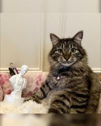

Political Science Mascot 2025-2026

Biography
Hugo “Le Chatssius” is a Fearless doctoral candidate at The Tortured Pawlitical-scientist Department at UW. True to their credo—“One is not born a cat but rather becomes one”—Hugo’s journey from stray theorist to feline luminary is beyond everyone’s Wildest Dreams. They have produced peer-reviewed scratches in the International Felinist Journal of Politics, Journal of Repawblicanism, and Catstitutional Studies Quarterly. Their dissertation, “From Yarn Balls to Yearn-alls: A Theory of Felinist Justice,” reimagines repawblican civic virtue through compulsory nap rotations, while their side project on catstitutionalism fills the Blank Space caused by the lack of Equal Scratching Rights Amendment for their fellow felines. As a Lover of equality who never goes out of Style, Hugo’s forthcoming book project “Democracy in Americats” explores how voluntary belly-rub associations foster purrsuasive civic engagement and combat the tyranny of the humanity. Between lecturing first-year kittens on the dangers of unchecked laser pointers and chairing UW’s Feline Repawblican Society, Hugo knows All Too Well that liberty purr-ishes without vigilant sunbeam surveillance.